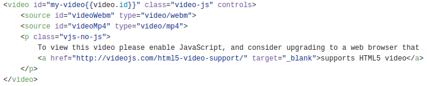
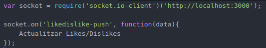
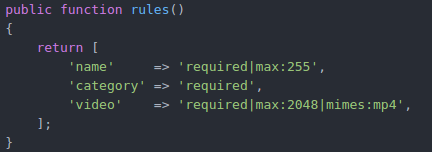
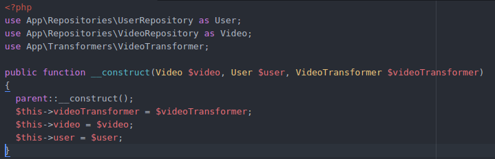
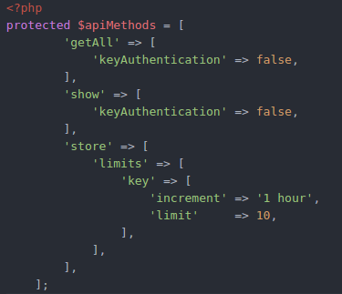
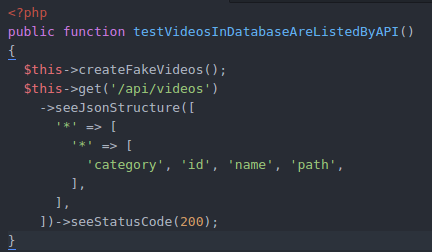

Created by Adam Alvarado Beromeu / GitHub
Que és LaravelTube?
És una plataforma web per a la compartició de vídeos, fent també que els usuaris puguen visualitzar-los, comentar-los i indicar si els agrada o desagrada el vídeo.
Està creada amb Laravel, Vue.js, Bootstrap, i moltes més tecnologies que veurem més avant.
Laravel - PHP
El framework Laravel l’he implementat per a la creació del Backend - API i per la part ‘única’ dels usuaris.
Bootstrap
Per a donar estil i fer la plataforma Responsive web design
Eloquent
ORM per a la creació de les migracions de la BD.
MySQL
Per a la creació de la Base de Dades
Vue.js
Per a la creació del Frontend fent SPA.
Ajax - jQuery
Per a peticions a la API i esdeveniments.
WebSockets
Per a afegir funcionalitats de RealTime.
AdminLTE
Creació de la part ‘única’ dels usuaris així com l’autenticació.
Laravel Socialite
Per a l’autenticació amb xarxes socials.
Video.js
Per a la creació del reproductor de vídeos.
ApiGuard
Per a la seguretat de la API.
FFMpeg
Per a la conversió a diferents formats del video.
Chart.js
Per a la creació de gràfiques.
Redis - Socket.IO
Per a afegir funcionalitats de RealTime en els likes/dislikes.
És la part on els usuaris poden cercar, visualitzar vídeos, registrar-se per a pujar i administrar vídeos... Aquí és on fem les crides als mètodes de l’API que veurem més avall per a fer cerques, filtratges per categoria, millors vídeos, etc.
Aquestes crides les fem amb Vue Resources i AJAX.
Vue Resorces exemple:
Tota aquesta part està creada a partir del patró Single Page Application que ens permet distingir de les aplicacions web tradicionals, ja que dibuixem qualsevol part de la interfície d'usuari sense necessitat de tornar a fer una petició sencera nova al servidor, sinó que el que anem canviant és el 'container' mentre que els menús continuen sent els mateixos i no els tornem a carregar.
En la part 'única' de cada usuari fem les crides als vídeos filtrant per usuari per a mostrar els resultats a les gràfiques o en l'apartat de gestió només de l'usuari corresponen. Aquest apartat no està creat amb Vue sinó que fem servir el MVC de Laravel. El patró SPA continua funcionant però aquí és amb les blades de Laravel.
Per al reproductor de vídeo fem servir Video.js. Un cop instal·lat l’únic que hem de fer és posar la tag vídeo del HTML5 amb la classe del vídeo js.
Likes i Dislikes en temps real.
En el Backend és on tenim dissenyada la API en les que es faran les crides així com les rutes i controladors necessàries per al AdminLTE. Creem les APIs per a comunicar el Frontend amb el Backend, controlant les peticions amb ApiGuard a més a més de les validacions corresponents dels Request.
Quan fem una petició, des de l’API a la BD es comunica mitjançant el Repository Pattern. Tenim creats els repositoris per a cada controlador de l’api per a què aquest es comuniquen amb la BD.
Les respostes de l’API passen per un transformador per a mostrar el resultat a la manera que volem llevant dades innecessàries o canviant els noms.
També tenim les excepcions. Aquestes les tenim en un Handler per a dir que si la request és JSON i falla, mostri un missatge d’error:
Les peticions en les quals hem de passar un request, tenen un request creat amb els camps que són necessaris i el validador d’aquest. Per exemple el request de VideoUpload té les regles següents:
Com veiem només acceptem vídeos amb mp4 però en la petició del store, aquest es converteix a altres formats.
Tots els transformadors o repositoris necessaris passen per injecció de dependències al constructor:
Les declaracions del ApiGuard per saber quins mètodes utilitzen key, limitacions, etc. ho fem amb un array anomenat apiMethods i com els controladors extenen del ApiGuard ell ja s’encarrega de fer la feina:
Com ja sabem una bona bateria de testos és important per a quan féssim algun canvi, puguem provar l'aplicació d'una forma més automàtica i sense necessitat de provar manualment si el que teníem fet fins al moment ens fallava pels canvis introduïts.
Exemple d’un mètode de test que trobem en els tests de vídeos:
La Base de dades és MySQL, amb l’ajuda del eloquent per a dissenyar les migracions que necessitem com:
Com hem dit amb el eloquent crearem les migracions necessàries amb les claus foranes per a fer les relacions entre les taules. Això també ens ajudarà a la creació dels models.
Per a fer proves també hem fet ús del seeders que hem creat per omplir la base de dades amb dades aleatòries. Les funcions de CRUD sobre aquesta BD és fan mitjançant com hem dit anteriorment el Repository Pattern fent les crides des de les funcions de l’API que hem vist en l’apartat anterior.
Com veurem a continuació, les relacions que hi ha entre els diferents Models i Taules de la BD són:
La seguretat d’aquesta aplicació tracta amb no deixar accedir als usuaris no registrats a la part única, controlant l’accés amb un Middleware que ens comprova si l’usuari està connectat i sinó redirigint-lo a la vista corresponent per a què ho faci.
Com ja hem explicat els usuaris que no disposen d’un compte no poden fer les funcionalitats de comentar/avaluar els vídeos així com tampoc de pujar i administrar els vídeos. Tot això ho aconseguim gràcies a la implementació del ApiGuard que ens genera una api_key per a cada usuari i indiquem quins mètodes de l’API necessiten aquesta api_key. També limitem les peticions per evitar atacs com DDOS.